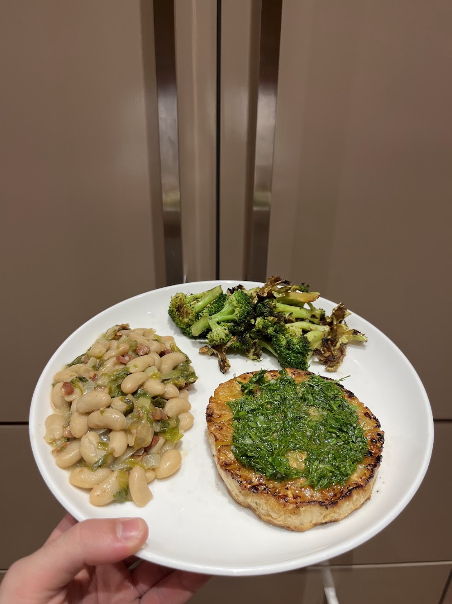

Celeriac Steaks
Home

Description
These are insanely good. If you've never had celeriac before, please start here. This recipe made me fall in love with it.
Ingredients
- 1 celeriac
- Salt
- Black pepper
- Avocado oil
Steps
- Preheat the oven to 400
- Peel the celeriac (easier with a knife) and slice it into 1 inch rounds
- Rub it with oil, salt and pepper and roast, flipping after 25 minutes or so
Notes
- Inspired by this recipe: https://www.thevegspace.co.uk/celeriac-steak/
- Goes well topped with an herby lemony dressing / gremolata / sauce